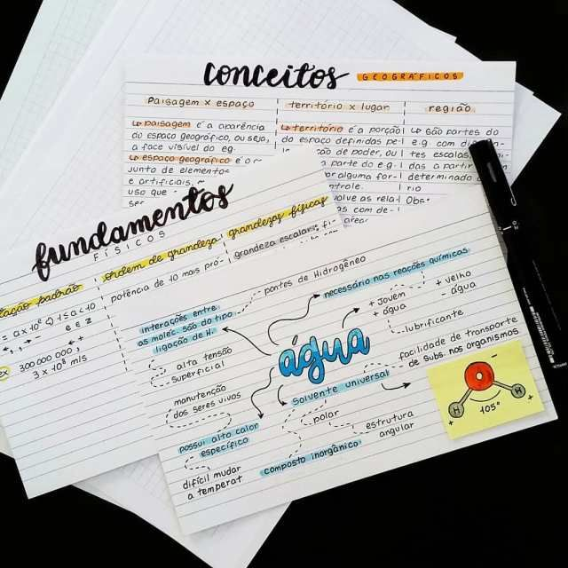

Existem diversas técnicas de estudo que podem ajudar estudantes a aprender com mais eficiência. Embora cada pessoa tenha suas próprias características e preferências, alguns métodos são reconhecidos por sua eficácia na melhoria da concentração, da memorização e da compreensão dos conteúdos. Nesta página são apresentadas algumas das técnicas mais utilizadas por estudantes em todo o mundo, incluindo métodos voltados para revisão, organização e retenção de informações.
Técnicas de Estudo
Pomodoro
A Técnica Pomodoro é um método de gerenciamento de tempo desenvolvido para aumentar a produtividade e reduzir distrações durante os estudos. O método consiste em dividir o trabalho em períodos de concentração intensa, geralmente de vinte e cinco minutos, seguidos por pequenos intervalos de descanso. Após alguns ciclos completos, realiza-se uma pausa mais longa. Essa estratégia ajuda a evitar o cansaço mental excessivo e permite que o estudante mantenha um nível constante de atenção ao longo do dia. Além disso, a técnica auxilia no combate à procrastinação e melhora a percepção do tempo dedicado às tarefas.
Active Recall
O Active Recall, também conhecido como recuperação ativa da informação, é uma técnica baseada na ideia de testar constantemente o próprio conhecimento. Em vez de apenas reler anotações ou destacar trechos importantes, o estudante tenta responder perguntas, resolver exercícios ou explicar o conteúdo sem consultar materiais de apoio. Esse esforço de recuperação fortalece a memória e permite identificar pontos que ainda precisam ser estudados. Diversas pesquisas na área da educação apontam que a recuperação ativa é significativamente mais eficiente do que métodos passivos de revisão.
Flashcards
Flashcards são cartões que apresentam uma pergunta, conceito ou palavra de um lado e a resposta ou explicação correspondente do outro. Essa ferramenta é amplamente utilizada para memorizar definições, fórmulas, datas, idiomas e diversos outros conteúdos. Quando combinados com sistemas de revisão espaçada, os flashcards tornam-se ainda mais eficientes, pois permitem que o estudante revise com maior frequência aquilo que apresenta mais dificuldade, otimizando o tempo de estudo e melhorando os resultados obtidos ao longo do aprendizado.

Hábitos Importantes
Além das técnicas específicas de estudo, alguns hábitos contribuem significativamente para o desempenho acadêmico. A combinação entre disciplina, organização e bem-estar físico permite que o estudante desenvolva uma rotina mais consistente e sustentável. Os hábitos apresentados abaixo representam práticas simples que podem ser incorporadas gradualmente ao dia a dia e trazer benefícios para a aprendizagem.
- Organização
- Planejamento
- Revisão constante
- Resolução de exercícios
- Descanso adequado